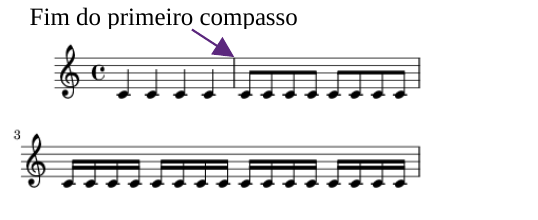

<section class="container-content">
    <div class="d-flex flex-column justify-content-around etapa1-texto">
        <div>
            <h5>Note que o primeiro compasso possui 4 semínimas. Ou seja, 4 x 1 = 4 unidades de tempo.</h5>
        </div>
        <div>
            
        </div>
    </div>
</section>
<div class="btn-etapas-container">
    <div class="btn-container">
        <button id="btn-voltar-context" onclick="btnVoltarEtapas(conteudo_etapa9.etapa9Conteudo31, 9)" class="btn selecao-etapas-btn" role="button">Voltar</button>
    </div>
    <div class="btn-container">
        <button id="btn-avancar-context" onclick="btnAvancar(conteudo_etapa9.etapa9Conteudo33, 9)" class="btn selecao-etapas-btn" role="button">Avançar</button>
    </div>
</div>